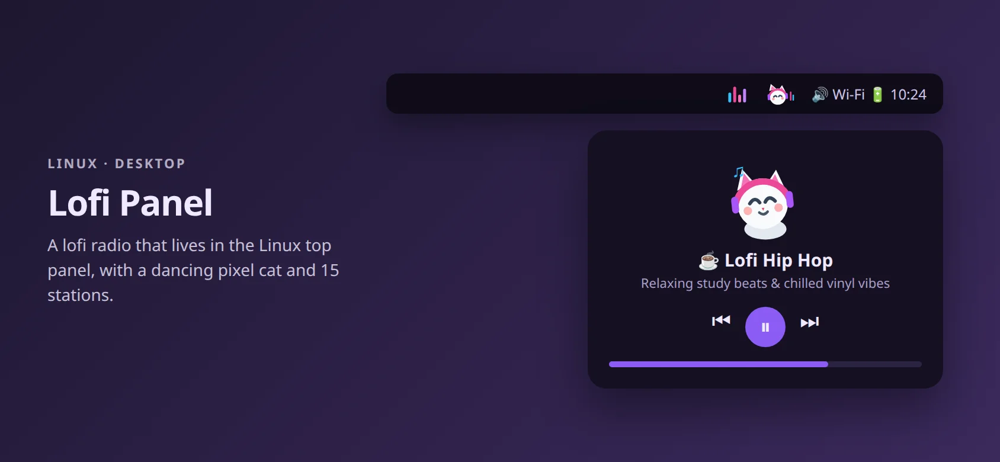

ỨNG DỤNG LINUX · 2026
Lofi Panel
Radio lofi và ambient nhỏ gọn nằm ngay trên thanh panel Linux, có chú mèo pixel nhảy theo nhạc và 15 kênh phát 24/7.
- Python
- GTK 3
- GStreamer
- D-Bus
- Linux

Vì sao mình làm
Mình thích vừa code vừa nghe lofi, nhưng mở một tab trình duyệt để nghe nhạc thì dễ lạc mất và tốn tài nguyên.
Lofi Panel đặt radio ngay trên thanh trên cùng: một cú bấm là phát, cuộn chuột để đổi kênh, và có chú mèo nhảy theo.
Có gì
Mèo trên panel
Chú mèo hoạt hình lắc lư theo nhạc, ngủ khi tạm dừng.
Trình phát mini
Bấm vào mèo để mở nút điều khiển lớn, equalizer và chọn kênh.
15 kênh
Lofi hip hop, café mưa, city pop, jazz, piano, V-Pop và nhiều nữa.
Âm lượng riêng
Chỉnh âm lượng riêng, không đụng âm lượng hệ thống; tự chạy khi đăng nhập.
Kỹ thuật
- Phát nhạcGStreamer playbin phát trực tiếp trong bộ nhớ, không tải file về máy.
- Biểu tượng panelStatusNotifierItem qua D-Bus, chạy trên COSMIC, GNOME và các panel FreeDesktop khác.
- Giao diệnCửa sổ popover GTK 3 viết bằng PyGObject; khung hình SVG động cho mèo và sóng nhạc.
- CLICác lệnh lofi-panel ui, toggle, next, stop, status.
GitHub
github.com/Phan-Trong-Hau/lofi-panel